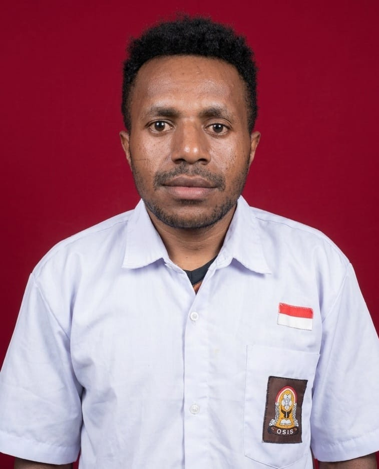

HTML
Menyusun struktur dan konten halaman website.
DasarPORTOFOLIO MAHASISWA
Mahasiswa Universitas Cenderawasih yang tertarik pada teknologi, pengembangan website, analisis data, dan pemanfaatan kecerdasan buatan untuk menciptakan solusi digital yang bermanfaat.

PERKENALAN
Saya Andreas Adii, mahasiswa Program Studi Sistem Informasi, Universitas Cenderawasih. Saya sedang membangun pengetahuan dan keterampilan di bidang teknologi informasi. Saya senang belajar, mencoba hal baru, bekerja sama, dan mengembangkan kemampuan untuk memecahkan masalah melalui teknologi.
KEMAMPUAN
Bidang yang sedang saya pelajari dan kembangkan.
Menyusun struktur dan konten halaman website.
DasarMengatur tata letak, warna, dan tampilan website.
DasarMempelajari logika dan interaksi pada halaman web.
Sedang dipelajariMempelajari cara membaca dan mengolah informasi.
Sedang dipelajariMemanfaatkan AI sebagai alat bantu belajar dan berkarya.
Sedang dipelajariMengolah dokumen, tabel, dan bahan presentasi.
DasarHASIL BELAJAR
Tempat menampilkan karya dan latihan yang sudah dibuat.
Website sederhana untuk memperkenalkan identitas, keahlian, dan kontak.
HTML · CSS · JavaScriptKumpulan latihan membuat halaman web dan memahami dasar pemrograman.
PembelajaranRuang untuk mengembangkan gagasan solusi digital bagi kampus dan masyarakat.
Pengembangan ideCatatan: ubah judul dan deskripsi proyek sesuai karya yang benar-benar sudah kamu buat.